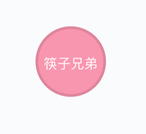
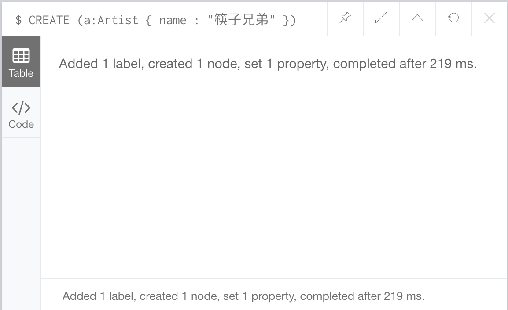

要用 Cypher 创建节点和关系，请使用
CREATE语句
这个语句由 CREATE 组成，后边跟上你要创建的点或关系。
举例
我们来创建一个包含乐队名和他们专辑的音乐数据库。
第一个乐队被称为筷子兄弟，我们创建一个艺术家节点，并称之为筷子兄弟。
我们第一个点看起来像下边这样

下边是创建筷子兄弟节点的 Cypher CREATE 语句：
|
|
这个 Cypher 语句创建一个带有 Artist 标签的节点，节点有一个 name 属性，该属性的值是筷子兄弟。
a 前缀是我们提供的变量名，我们可以使用任意变量名。如果我们需要在后边的语句中用到这个点（上边的情况中我们没有用到），这个变量就会是很有用的。注意，变量仅限于在单条语句中使用。
到 Neo4j 浏览器中执行上边的语句，该语句将创建一个节点。
一旦 Neo4j 创建完节点，你将看到这样的消息：

展示节点
CREATE 语句创建节点但是不展示节点。为了展示节点我们需要在它后边跟上 RETURN 语句。
我们来创建另一个节点，这次我们创建一个专辑，与之前不同的是这次我们在后边跟上 RETURN 语句
|
|
上边语句创建了一个带有 Album 标签的节点，它有两个属性：name 和 released。
注意，我们通过使用它的变量名（本例中是 b）返回了这个节点。
创建多个节点
我们可以通过用逗号分隔来一次性创建多个节点：
|
|
或者可以使用多个 CREATE 语句：
|
|
接下来，我们将在节点间建立关系。